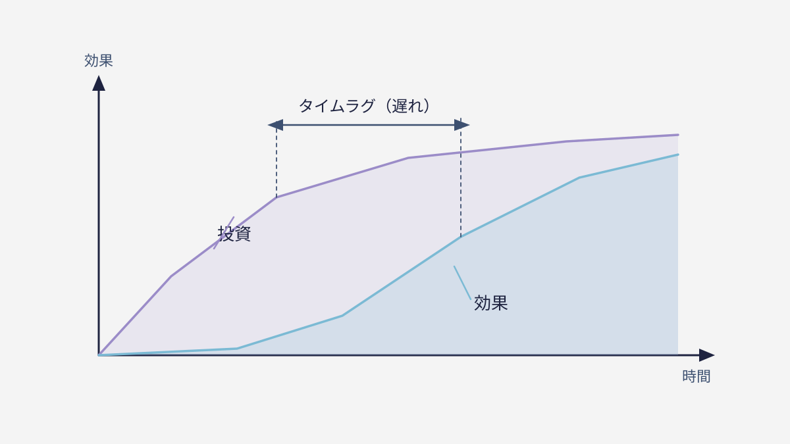

— 01 —「見えない」だけで「測れない」わけではない
健康は目に見えませんが、血圧や体重で測れます。ブランドも同じ。直接は見えなくても、いくつかの数字で現在地が分かります。ブランド研究者のアーカーは、ブランドの力を5つの柱——認知（知られているか）／ロイヤルティ（また選ばれるか）／連想（何と結びつくか）／知覚品質（良いと感じられるか）／資産（判断の仕組みがあるか）——で捉えました。
この5つを点検すれば、「どの柱が強く、どこが弱いか」が見えてきます。たとえば「知られてはいるが、リピートされない」なら、認知は高いがロイヤルティが低い、という具合に、悩みの正体が具体的な言葉になる。もう、ふわっとした感想で語る必要はありません。
大切なのは、この5つが“バラバラの点数”だということ。総合点が高くても、一本だけ極端に低い柱があれば、そこが会社全体の足を引っ張ります。だから見るべきは平均ではなく、いちばん低い柱がどこか、なのです。
面白いのは、この5つが会社の“健康の内訳”になっていること。売上という体重だけを見ていると、なぜ増えた・減ったが分かりません。でも5つの柱で見れば、「認知は足りているのに、選ばれ続ける力が弱い」といった具合に、原因の在り処まで見えてくる。だから、結果の数字だけでなく、この5柱を見るのです。
— 02 —効果は「経営の数字」に必ず現れる
ブランドが効いてくると、経営の数字が動きます。名前での指名検索が増える（＝広告費が下がる）、商談の成約率が上がる（＝営業が楽になる）、解約が減る（＝ファンが定着する）、紹介が増える。これらはすべて、計測できる指標です。
たとえば、これまで10件の商談で1件しか決まらなかったのが、「あの会社なら安心」という像が広まると3件決まるようになる。同じ営業努力で成果が3倍になったなら、それは立派なブランドの効果です。売上という結果の“手前”で、こうした変化が先に現れます。
「ブランディングに投資して、何が変わったのか」は、雰囲気ではなく、こうした数字の変化で追えます。効果が見えないのではなく、見る場所を知らないだけ。どの数字を見るかを決めておけば、投資はきちんと検証できるのです。
— 03 —だから「まず測る」から始める
大切なのは、いきなり作り込む前に“現在地”を測ること。5つの柱のうち一番低いところが、次に手を打つべき場所です。総合点よりも、最も弱い柱がボトルネックになる。そこを放置したまま他を磨いても、水は一番低いところから漏れ続けます。
健康診断を受けずにサプリを飲んでも意味がないのと同じで、測らずに施策を打っても空回りします。「なんとなく良さそう」で始めたロゴ刷新やSNS強化が、実は弱点と無関係だった——これはとてもよくある、もったいない失敗です。
まず測り、弱点を知り、そこから直す。この順番を踏むだけで、限られた予算を“いちばん効く一手”に集中できます。測定から始めるブランディングだけが、費用を“投資”に変えられるのです。

— 04 —明日から、できる一歩
まず、自社の“ブランドの通信簿”にする数字を一つか二つ決めてください。指名検索の数、商談の成約率、紹介の件数——どれでもかまいません。定点で見ると決めた瞬間から、ブランドの効果は追えるようになります。
そして、その数字が動く“手前”にある5つの柱を測るのが、ブランドチェックです。所要2分で、どの柱が弱点かが分かる。効果を測る第一歩として、まずは自社の現在地を確かめてみてください。